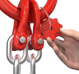
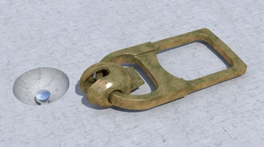
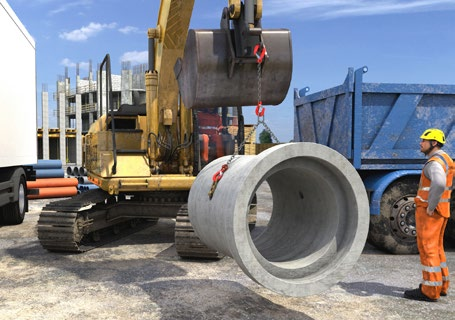

|
Sorgen Sie dafür, dass entsprechend den zu hebenden Lasten und deren Abmessungen geeignete Anschlag- und Lastaufnahmemittel verwendet werden. Deren zulässige Tragfähigkeit ist, neben weiteren wichtigen Informationen, der Kennzeichnung bzw. dem Typenschild zu entnehmen.

Abb. 56 Kennzeichnung eines Kettengehänges
Wählen Sie die Anschlagmittel wie Seile, Ketten und Hebebänder z. B. nach der Form und den Abmessungen der Last, den Anschlagpunkten, der Art und Weise des Anschlagens, den Tragfähigkeitsangaben des Herstellers und dem Neigungswinkel aus.
Sie können das Herabfallen von Lasten bei Hebe- und Transportvorgängen durch die Verwendung formschlüssig (über die Form gesichert, z. B. Kugelkopf- oder Schraubanker) wirkender Lastaufnahmemittel verhindern.
 Vermeiden Sie, wenn möglich, den Einsatz von kraftschlüssig (über Reibkräfte gesichert, z. B. Schachtringklemmen) wirkenden Lastaufnahmemitteln! Ist dies nicht möglich, setzen Sie kraftschlüssig wirkende Lastaufnahmemittel nur ein, wenn sie mit einer zusätzlichen formschlüssigen Halteeinrichtung (z. B. Kette) ausgerüstet sind oder sichergestellt ist, dass sich keine Personen im Gefahrbereich der hängenden Last aufhalten. Vermeiden Sie, wenn möglich, den Einsatz von kraftschlüssig (über Reibkräfte gesichert, z. B. Schachtringklemmen) wirkenden Lastaufnahmemitteln! Ist dies nicht möglich, setzen Sie kraftschlüssig wirkende Lastaufnahmemittel nur ein, wenn sie mit einer zusätzlichen formschlüssigen Halteeinrichtung (z. B. Kette) ausgerüstet sind oder sichergestellt ist, dass sich keine Personen im Gefahrbereich der hängenden Last aufhalten.
Wählen Sie Anschlag- und Lastaufnahmemittel so aus, dass sich Lasten nicht unbeabsichtigt lösen oder verschieben können.
Lasten sind so abzuladen, zu lagern und zu stapeln, dass sie nicht unbeabsichtigt abrollen, abrutschen oder kippen können. Stellen Sie als Unternehmerin oder Unternehmer sicher, dass auf der Baustelle geeignete Flächen, Einrichtungen, z. B. A-Böcke und Hilfsmittel, z. B. Keile zum sicheren Lagern und Stapeln, zur Verfügung stehen.
 Beachten Sie, dass bei der Verwendung mehrsträngiger Gehänge nur zwei Stränge als tragend angenommen werden dürfen, wenn keine Ausgleichseinrichtungen vorhanden sind. Der maximale Neigungswinkel des Anschlagmittels darf 60 Grad nicht überschreiten. Beachten Sie, dass bei der Verwendung mehrsträngiger Gehänge nur zwei Stränge als tragend angenommen werden dürfen, wenn keine Ausgleichseinrichtungen vorhanden sind. Der maximale Neigungswinkel des Anschlagmittels darf 60 Grad nicht überschreiten.
Sorgen Sie dafür, dass lange stabförmige Lasten, z. B. Rohre, nicht in Einzelschlingen angeschlagen, sondern z. B. mit Traversen gehoben werden, damit sie nicht durchbiegen, brechen oder herausrutschen können.
Lassen Sie nur Anschlagmittel verwenden, die mit Sicherheitshaken ausgerüstet sind.
Müssen Lasten mit scharfen Kanten gehoben werden, sind die verwendeten Anschlagmittel durch Kantenschoner oder Schläuche zu schützen.
Entziehen Sie Anschlag- und Lastaufnahmemittel der weiteren Benutzung, wenn Mängel festgestellt werden, die die Sicherheit beeinträchtigen.
Ablegekriterien für Anschlagmittel enthält die DGUV Regel 109-017.
Lastaufnahmemittel wie z. B. Mulden oder Boxen dürfen nicht über deren Rand hinaus beladen werden. Herausragende Lasten sind gegebenenfalls gegen Herabfallen gesondert zu sichern.
Bewahren Sie Anschlag- und Lastaufnahmemittel geschützt vor Witterungseinflüssen und aggressiven Stoffen auf, damit ihre Funktionsfähigkeit nicht beeinträchtigt wird.
 Unterweisen Sie die an den Hebevorgängen beteiligten Beschäftigten (Maschinenführer bzw. Maschinenführerinnen, Anschläger bzw. Anschlägerinnen) in die bestimmungsgemäße Verwendung von Anschlag- und Lastaufnahmemitteln und die Erkennung von sicherheitsrelevanten Mängeln an Anschlag- und Lastaufnahmemitteln. Unterweisen Sie die an den Hebevorgängen beteiligten Beschäftigten (Maschinenführer bzw. Maschinenführerinnen, Anschläger bzw. Anschlägerinnen) in die bestimmungsgemäße Verwendung von Anschlag- und Lastaufnahmemitteln und die Erkennung von sicherheitsrelevanten Mängeln an Anschlag- und Lastaufnahmemitteln.

Abb. 57 Detail Kugelkopfanker

Abb. 58 Transport einer formschlüssig angeschlagenen Last

Abb. 59 Beispiele für Ablegekriterien von Drahtseilen
|